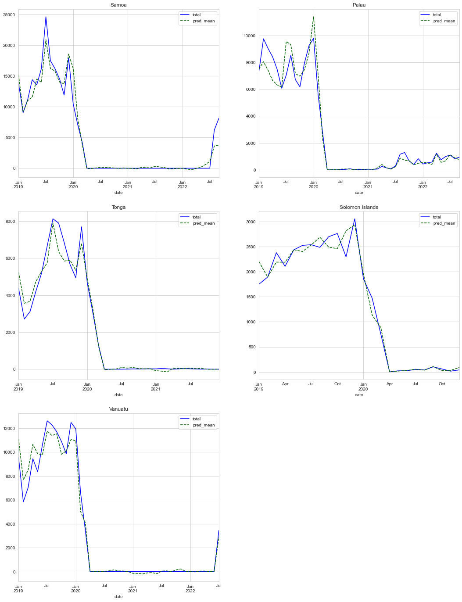

Ratio Approach#
Show code cell content
import os
os.chdir("../../")
import numpy as np
import pandas as pd
from src.tourism.mtsmodel import *
from src.tourism.ts_eval import *
import seaborn as sns
sns.set_style("whitegrid")
import matplotlib.pyplot as plt
import sys
import arviz as az
try:
import bambi as bmb
except ImportError:
!{sys.executable} -m pip install --upgrade bambi
import bambi as bmb
import warnings
warnings.filterwarnings("ignore")
[2024-02-15 17:32:40 - pytensor.tensor.blas:1016 - WARNING] Using NumPy C-API based implementation for BLAS functions.
Show code cell source
def run_ratio_model(country: str):
model = RatioPipe(country=country,
y_var="total",
exog_var=["covid", "stringency_index", "samoa_travel"])
model.read_and_merge()
model.transform()
model.fit(formula="ratio~covid * stringency_index+C(quarter)+" +
str(country) + "_travel")
pred_df = model.get_prediction()
model.get_benchmark_evaluation()
return model
def plot_observed(data, ax):
data.plot(x="date", y="total", color="blue", ax=ax)
data.plot(x="date", y="pred_mean", color="darkgreen", linestyle="dashed", ax=ax)
return ax
country_list = ["samoa", "palau", "tonga", "solomon_islands", "vanuatu"]
models = [run_ratio_model(country) for country in country_list]
fig, axes = plt.subplots(3, 2, figsize=(18, 24))
for idx, (country, model) in enumerate(zip(country_list, models)):
data = model.model_data.dropna()
blr = bmb.Model(
"ratio ~ covid*stringency_index + C(quarter) +" + str(country) +
"_travel", data)
trace = blr.fit(tune=2000, draws=2000, return_inferencedata=True)
row = idx // 2
column = idx % 2
az.plot_forest(trace, ax=axes[row, column])
axes[-1, -1].axis('off')
100.00% [16000/16000 00:12<00:00 Sampling 4 chains, 0 divergences]
100.00% [16000/16000 00:10<00:00 Sampling 4 chains, 1 divergences]
[2024-02-15 17:33:30 - pymc.stats.convergence:177 - ERROR] There were 1 divergences after tuning. Increase `target_accept` or reparameterize.
100.00% [16000/16000 00:11<00:00 Sampling 4 chains, 3 divergences]
[2024-02-15 17:33:46 - pymc.stats.convergence:177 - ERROR] There were 3 divergences after tuning. Increase `target_accept` or reparameterize.
100.00% [16000/16000 00:12<00:00 Sampling 4 chains, 42 divergences]
[2024-02-15 17:34:02 - pymc.stats.convergence:177 - ERROR] There were 42 divergences after tuning. Increase `target_accept` or reparameterize.
100.00% [16000/16000 00:11<00:00 Sampling 4 chains, 2 divergences]
[2024-02-15 17:34:18 - pymc.stats.convergence:177 - ERROR] There were 2 divergences after tuning. Increase `target_accept` or reparameterize.
(0.0, 1.0, 0.0, 1.0)
fig, axes = plt.subplots(3, 2, figsize=(18, 24))
for idx, model in enumerate(models):
row = idx // 2
column = idx % 2
ax = plot_observed(model.prediction, ax=axes[row, column])
country_name = " ".join(i[0].upper() + i[1:] for i in country_list[idx].split("_"))
ax.set_title(country_name)
axes[-1, -1].axis('off')
plt.show()
